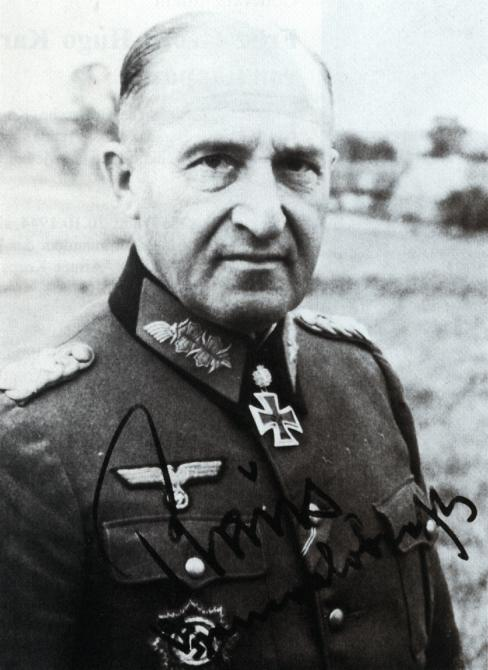

两周前搭乘自纽约飞往桃园的长荣班机十分颠簸，以致没有按预期计划读所带的书。其后在台北给演讲，也没有时间。一直到几天前在台南乡下老家閒下来了，才有空仔细读完全书，觉得还蛮有意思的。书名是《Panzers on the Eastern Front》（《东线之德军装甲》），作者是Erhard Raus，二战期间做到德军的Generaloberst（四星将军）。这并不是Raus写的自传，而是他在战后被美军俘虏，参加了美军歷史部门指派的一个庞大的战史回忆分析计划。当时美军关着大约500名德军的将官，一名叫Marshall的上校建议利用这个机会来撰写详细的二战战史，以帮助美军改进自己的战略和战术。这个建议被採纳之后，其后15年间，基本上所有被俘的德军将领都合作了，包括后来被依战犯罪起诉的Goering和没有被起诉的Guderian等人。但是据后世的美军歷史学家评估，最有价值的是Raus所写的几十篇教材，所以有人把其中的精华集合在一起出书，就成了这本《东线之德军装甲》。因为它原本是军用的教材，所以对像是作战序列（Order of Battle）和兵力调动这样的细节十分讲究，并不是适合一般人消遣性阅读的作品，也因此虽然我很喜欢这本书，我并不推荐大家去读，只在这里简单介绍一下其内容。
Raus虽然是1889年出生，只比Manstein小两岁，比Guderian小一岁，比Rommel还大两岁，但是他的知名度并不高。这主要是因为他是奥地利人，在1938年德国兼併奥地利（叫做Anschluss）之后才被纳入德军。1939-1940年德军横扫西欧时，他只是第6装甲师（6th Panzer Division）里的上校团长，根本没有机会出名。1941年希特勒开始发疯，在没有做军事动员准备也没有准确的情报之下，仍然对苏联进行突袭，第6装甲师是北路（德文Heeresgruppe Nord，英文Army Group North，1941年东线德军的三个兵团集群之一）先锋之一。这时Raus刚升为上校旅长，下辖两个步兵团。Kampfgruppe Raus（即他统辖的战斗群）不但成为第一个突破Stalin Line（俄国在面对波罗的海三小国边境上的预设防御线）的德军单位，而且马上又以急行军奇袭了Luga河上的渡桥，在其后一周以1500人的疲惫之师，阻击了两个装备完整的苏军师的反击（兵力比大约为1：15，坦克数量比约为1：4）。Raus随即于九月被拔擢为Generalmajor（一星少将），受命做为进攻Leningrad的先锋；他仍然是以少胜多、以弱克强，只用了一个多礼拜就突破了10公里宽的Leningrad Line（即Leningrad门口的最后防御带）里的12道防线，摧毁了300多个炮楼，然后击退了苏军的装甲反衝击，眼看着Leningrad已经唾手可得，希特勒却在最后一分钟把第6装甲师和所属的第41装甲军调到中路去合围在Vyazma的60万苏军，等到战场清理完毕，俄国的冬天已经到了，而德军却因希特勒的坚持而不能配备冬季服装，所以面对苏军可以以一抵十的德军就成千上万地冻死在Leningrad和Moscow的外围。
这时Raus已经正式升了师长，但是兵力被零下40度的寒冬摧残殆尽，希特勒又不准撤军，他面对在数量和防寒设备上都有绝对优势的敌军，居然只凭着机动能力出奇兵一再主动出击，完全挫败了苏军切断德军第9兵团（兵团长是另一位东线的名将Walter Model）的补给线的企图，也为自己赢得全师官兵的拥戴，得了一个“Raus zieht heraus”的称号（在德文里押韵，意思是“Raus总能挽救局面”）。1942年四月，残破的第6装甲师终于被调到法国进行整补，到了十一月，第6兵团在Stalingrad被围，此时整个德军里战力最强的就是第6装甲师，于是奉命连夜以铁路机动到前线打破苏军的包围圈。第一部列车到站时，一个苏军骑兵师刚刚衝进车站，第6装甲师久经Raus的训练，临危不乱，随即下车作战。在此后的一个多月，第6装甲师面对苏军的第51兵团和第3坦克兵团，又是在1：10的劣势兵力下以少胜多，把两个苏军兵团都打残了，而且向Stalingrad前进了35公里，剩下的35公里路上已经没有强力的苏军部队。可惜希特勒严令第6兵团不得突围，而史达林却把战略预备队的两个坦克兵团调来威胁第6装甲师的左后方，Raus只好转向迎敌，Stalingrad包围圈里的30万德军终究还是全军覆没。
苏军吃下了第6兵团之后，随即向西发动总攻击。南路德军司令Manstein紧急组成第11军，升Raus为Generalleutnant（二星中将）军长，他做为左翼帮助主力夺回Kharkov，是为第二次Kharkov战役。1943年七月，希特勒中了Zhukov的陷阱，发动Operation Citadel攻击俄军在Kursk的坚固阵地；全军只有Raus的部队对俄军布下的庞大雷区有充足的预先准备（其他部队尤其是装甲，奉希特勒命令直接衝入雷区），没有受损。德军锋锐被挫之后，苏军发动总反攻，德军只剩第11军还有一点力量能在Kharkov进行迟滞作战，面对四个齐装整员的苏军兵团，打残了其中一个，并成功地掩护整个南路德军转进到新防线，这就是第四次Kharkov战役；Raus因此役而得到带橡树叶的骑士勋章（The Knight's Cross with Oak Leaves），Manstein并向希特勒推荐Raus为他手下最优秀的将领。于是1943年十一月，在基辅附近的德军又因希特勒的乱指挥而频临崩溃后，希特勒开除了北路军第4装甲兵团司令Hoth为替死鬼，Raus就被任命为新司令。刚到任他就发动坦克突击，完全摧毁了第1乌克兰方面军的所有重炮兵，局面因而稳定。在整个1944年，Raus进行了一个又一个的迟滞作战，面对至少六倍于己的苏军，他以自己特长的机动攻势防御进行一次又一次的严重杀伤，始终保持完整有序的防御线。
陆军四星上将Erhard Raus的签名照。领口带的就是带橡树叶的骑士勋章。
到1945年，希特勒的乱指挥已经让苏军打入德国境内。尤其是德军的优势完全在于灵活指挥下的机动性，而希特勒偏偏不准做防御工事也不准做任何撤退，所以苏军开始反攻之后，只要有突破就必然能包围大批德军，而包围之后德军必然受命死守不能突围，也就是等着被全歼。这样几百次下来德国的人力就被消耗殆尽，最后只能兵败如山倒。每过一段时间，就有高级将领受不了希特勒的瞎指挥而自行挽救手下的部队，随即当然就被撤职查办；后来希特勒对职业将领完全不再信任，只能改派自己的亲信去当监军。1945年二月，Himmler出任Army Group Weichsel（兵团集群，原译为集团军，不过后来共军把合成兵种的军级单位也叫做集团军，造成混淆）的司令，Raus被派去当他的参谋长。一开始Raus还以为Himmler和希特勒是一丘之貉，所以在他面前批评统帅部乱指挥时是准备要被逮捕的，没想到Himmler回答说你讲的这些，我才在几天前跟Fuhrer当面提起，被他轰了出来，要不我推荐你去见Fuhrer，你自己去跟他谈。于是Raus几天后见了希特勒，只讲了情势如何恶劣，还没有讲到统帅部的命令有多么脑残，就被希特勒制止，换了无关紧要的话题，然后被送出门。当时希特勒的参谋长是Guderian，据他回忆希特勒马上就决定要把Raus撤职，Guderian冒着自己头颅的危险为Raus求情，但是希特勒不在乎。如此一来，反而救了Raus一命，他因此而离开东线，得以向美军投降。
对二战歷史有兴趣的人，一直对德国如果不受希特勒乱指挥干扰，是否能战胜苏联，有很大的争议。我原本是骑墙的，但是在读过这本书后，我同意即使是在1941年德国还没有全体动员，所以必须以5000辆坦克面对20000辆更优良的苏军坦克情形下，只要是让Manstein或者Rundstedt这样的高明将领来全权做统筹决定，仍然能在2-3年内彻底击败苏军。希特勒一味强攻，不准做任何除了最佳脚本之外的准备，实在比外行还要糟糕得多。光是1941年因为南斯拉夫政变而浪费了两个月的晚春，以致到夏天才开打，居然还不准准备冬衣，就已经是匪夷所思的自我割喉。小罗斯福指望靠希特勒成就美国的霸业，实在是一招险棋：希特勒若不是如此脑残，欧战多打个三四年都不奇怪；不过既然希特勒已经在1939年开战了，美国若是袖手旁观只会更糟糕。
希特勒只凭他一人就把老欧洲的第一强权德国烧成灰烬，隔了70年才勉强做到一个孱弱的欧盟的盟主。中国现在只要和平发展，再过15年自然无敌于天下，那么当然就不该急着以己之短对美国之长而学希特勒做军事斗争。反之台湾產业升级停滞，社会混乱，正需要一个有为的政府来力挽狂澜，可是偏偏却遇到一连三任不干正事的总统，把权力完全下放给愚民，而这些愚民在民主制度下当主子，其瞎指挥的离谱程度与希特勒相比有过之而无不及：一味仇中，只想避免有序的文统（有如希特勒一味强攻，只想避免有序的撤退），而不在乎企业和人才被包围全歼，那么就如纳粹德国一样，在人力资源消耗殆尽之后，必将面临山崩式的溃败。台湾的底子，那能跟德国相比？Raus冒着生命危险都要对希特勒下谏言；我若是置身事外，岂不有愧于心。
53 条留言
享受和平太久已忘记战争是最直接有效的竞争手段，导致所言所行都太理想太天真化，等到战争的靴子落到头顶时才醒悟世界是残酷和血腥的。
民主、自由都是好东西，但太过就成了日月神教。香港前些天是几百人到中联办门口抗议玉林狗肉节，这两天又去新加坡驻港领事馆门口请愿，要求新加坡政府立即释放因在网上批评前总理李光耀，而被定罪的少年余澎杉。颇有当年红小将“要解放全世界剩下那三分之二受苦受难的人类”的气概。
PS:完全在于"零"活指挥?
为了方便管理，我申请做了吧主。把一些后台数据给您，可能会对您了解读者人群有帮助（可用吧内链接不用翻墙看博客）高峰时日访问量700-800，近七日内平均400左右。
已更正，一切多谢了。
回楼上，我想应该是这样的，洪秀柱最开始并没有想到有可能成为国民党的候选人，他提出的这个“一中同表”最开始可能是为后来出现的候选人提出一些逆耳忠言。但是，时势造英雄，她竟然成了候选人，我想这是最开始她也预料不到的，从而导致为了胜选她的理论必须做些许修正。我觉得现在是两岸和谈对台湾来说最后最好的时机，毕竟目前还有些“价码”。即使她的理论有些瑕疵，只要她能当选后而把两岸带到谈判桌上，台湾人民幸甚，不过目前看来这个可能性很微弱。
我回台湾只有两周，但是已经足以确定台湾人不可能在一年内醒悟。
chenwj2015-07-01 00:00:00
我觉得洪秀柱之前发表的两岸言论过于一厢情愿，如要北京承认中华民国，又或是要签署两岸和平协议。我不了解台湾的政治人物为什么会不知道什么是 "心照不宣" (九二共识就是心照不宣的例子)。两岸政策和言论应该要私底下先和大陆方面讨论一下，双方有共识之后，再公开宣讲。太过冒进，我觉得反而搞得里外不是人。
至于宋楚瑜，有消息说他有意愿出马竞选。我最近有看到一些评论，还是强调其能力，至于他和亲民党立委之前在媒体上的言论，要不说是幽默，要不说是宋楚瑜无力约束底下党员 (
http://bbs.tianya.cn/post-333-689625-1.shtml)。这一点不知道先生怎么看?
最近台湾政坛和媒体真让我开了眼界。我现在才知道台湾可以这样活在自己的圈子，不管水电 (台电昨天又发出警告)，只管政治算计到如此程度。
宋楚瑜是典型的为捞钱而从政的政客，如果上台只会比马英九还在乎民调和社论。
先生是否可以分析一下核电的发展呢~。德国已经废核，而台湾也已封存核四。而大陆正在大力发展第三、四代核电技术。我很想听听先生的高论。多谢，多谢！
请参见《克里斯蒂娜的玩笑》和《高温气冷堆》。
史达林格勒之役结束后就有人建议东线应该设立一个总司令来统揽一切, 其时曼斯坦最被推重, 但希特勒没有採纳; 多半是因为不信任那些德国参谋本部培养出来的贵族军人. 后来在西线虽然设立了总司令, 但是党卫军和空军都不受指挥而直接听命于柏林. 所以就像老蒋喜欢越级指挥一样, 希特勒凡事干涉混乱了指挥系统, 那这仗要打好就很困难, 失败也就无法避免.
上层领导彼此猜忌不能齐心协力的结果通常会是灾难性的, 如果再加上下层人员同样离心离德; 譬如台湾的现况, 那恐怕就离死不远了.
在台湾如何上下取得共识? 这真是千难万难; 因为半个世纪以来就跟香港一样, 台湾没有经过什么大风大浪, 整个岛就像是个温室. 台湾非要等到那一天经歷风霜之后才会知道; 生存之道不单单只是努力打拼, 你还得认清方向.
那么谁能来指出方向呢? 现在我只能选择洪秀柱. 等十九号之后看结果; 如果被正式提名我就在八月回台捐钱, 同时串联在台的亲朋好友共襄盛举.
洪还是白纸一张，连幕僚群都没有，未来的方向还很难说；只是蔡英文却肯定会祸国殃民的。
现在的台湾人太爱把台湾之光挂在嘴上了
台湾确实有很多优点，但总是挂在嘴上，表面上是有自信，实际上却已经泄气了
因为如果是理所当然的事情，那就不需要强调
西方爱称讚台湾民主，来对比不肯民主化西方化的中国
但是扪心自问，民主究竟带给台湾什么样的好处？
而我们现在所享受到的一切？究竟是民主的成果？还是发展程度的成果？至少我个人更相信是发展的成果
如果台湾人真的不带制度信仰的理性客观看待，可以说虽然民主确实有好处，但实际上在台湾是弊大于利
比起在大陆面前夸口民主，不如承认台湾的制度是一场悲剧，承认错误，否定自己，放下毫无意义的坚持，才是台湾进步的开始
台湾有很多优点，但民主制度绝对不是台湾的优点，把民主挂在嘴上也不是自信，而是自卑的表现
我话说得很绝，只是希望提醒有些人不要在死要面子了，王先生您也不用回我这段文张
我没有反面的意见。
当今台湾面临着哲学中最基本的三个问题：
1.我是谁？（台湾国，中华民国，中华民国是台湾，中华民国在台湾） 2.我来自哪里？（去中国化or本土化） 3.我将要去何方？（独立or如何与大陆统一）
学过哲学的人都清楚，这三个问题是很难得出清晰的答案，而会让人们一直困惑。人一当不清楚自己的定位，就容易做傻事。当今，台湾也处于困惑和迷茫之中。
现在的世界格局依旧遵循‘丛林法则’，即使外表披着全球化合作的美好外衣。历来，国际政治就是由大国决定，小国（或地区）从来就只能依附于大国。台湾是中美的角力场，可能还需有日本。
从美方来看：美国口头上重返亚洲，实际上是战略撤退，美方自身实力退出第一岛链，而放出日本，菲国与中国直接对面。这一点，可以从最近东海/南海紧张局势，以及美澳军事基地协议等几点看出。因此，作为第一岛链的台湾，美方不会直接介入台海问题，也不会真正帮助到台湾。美国只是想用台湾这张牌，来和中国达成某种利益交换。至于到底台湾能卖多少钱，中方能否出这个价，就要根据以后的两方发展较量来看。
从中方来看：中国走向海洋，由陆权国家走向海权国家，那么台湾就必然是中国的势力范围。另外，中国人历来的大一统思想，中华民族的民族情结，中华民族复兴强烈愿望等这些都决定了不能让台湾出去。
也就是说：台湾独不独立，不是台湾自身的问题。
从现在的台湾政治和舆论看，台湾的迷惑将持续一段较长的时间。台湾有一种很强的‘岛国’意识，在处理两岸问题上表现得不成熟，同时也缺乏成熟的政治家（类似于日本，不会出现大哲学家，所以日本有被称为：drifting country）。两党的乱斗也将恶化这样的情况。要回答最开始的三个问题，这不是通过争论就能辩论清楚的。必须有强力的政治手段和政治家才能让台湾找到方向。但是，在当今台湾的土壤上，已经缺乏理性讨论大方向的环境。
另外，某些台湾媒体臆想的一种假设：“只要大陆民主后，那么有可能让台湾出去”，这个观点太幼稚，这点也可以看俄罗斯和乌克兰。也许，中国大陆实现了两党轮替，竞选者为了获得支持率，说不定最先做的就是武力攻台！
真希望台湾朋友能够看清形势，（时间不占在台湾这边）。从实际出发，找到一条自身利益最大化的路。
我已经在《政府的第一要务》里讨论过，这些哲学问题都应该只是哲学问题，政治的首要目的是保障全民福祉，尤其是贫困的弱势群体。为了自己的哲学思想而牺牲成千上万的生命是邪恶、不理性、而且会有不良后果的。
我同意大陆民主化将使中方的用兵全无节制。还好这看来不会发生。
刚看到王先生和读者万国衣冠关于”装甲将军”的对话，看得出其中北美和亚洲两地讨论习惯的差异，觉得为免误会，应该提出来谈谈。
在北美，一个人提出论述，是自己负责找寻支持证据。任何人都可以要求你拿出证据来。所以，没有坚实証据前，通常大家都不出声。如果要讲意见，则讲时声明只是意见，没有证据。(有些读者是大洋洲来的，习惯是否都是这样子，不敢说。)
在中港臺讨论比较宽松，大家想到便讲，并没有想到自证论奌的问题。如果被要求证明，还可能会感到被冒犯。
两面的讨论习惯很不同，可能会有个磨合过程。
你讲的没错，我的确要求有一分证据讲一分话，不过我觉得这不是“北美”的习惯，而是科学的对话礼仪。请参见《丁肇中和高能物理的牛屎文化》。
这个部落格的副标题“事实与逻辑”，要求的不只是我自己，也是每一个留话的人。那位读者可以对文章里的兵力比率提出疑议，但不是异议，因为他没有事实根据，国共的宣传习惯显然与德美的传统没有直接的逻辑关系。
人有权力, 才有所谓选择
突围框架寻求权力以 做自主选择, 不是愚蠢, 是人权
愚蠢的不是人民, 不是政策, 而是框架
如果你愿意思考深一点的话
逻辑不清，不知所云，警告一次。
frances2015-07-01 00:00:00
I personally really don't see the need for PRC to take over TWN by force, because there is no gain to China for doing so...Unless U.S. (or/and Japan?) involve even deeper...U.S. will certainly profit from worse tension between TWN and China, even more so even if both go to war...The most unfortunate Pao4-hwei1 of course are those who can't flee from TWN...but really (maybe i am in denial?), besides there is no Gain for China if they use force, the fact is there won't be any Need for them to do so...TWN has been marginized (?) economically and rely on China in many areas, this reliance will only grow as time grows...Taiwan will have no chips left, how to fight? who wants to fight? I knew many TWN independance foundalmentalists all their children (even themselves) live in U.S. or few other overseas countries...It's so much easier to ask other people to die for their ideology while they themselves only provide lip service
Is the scenario of a bankrupt Taiwan with nowhere else to turn to but China really better than a Taiwan that is still worth conquering?
caspase2015-07-01 00:00:00
楼上是用大陆高中惯用的高考倒计时来给台湾紧迫感啊？哈哈。可惜在台湾不可能实现，几个学生一闹就黄了。
大家谈到要破除民主的迷思，谈何容易？台湾几乎是全盘的接收西方的民主自由洗脑，到现在已经快30年了。在这30年中成长起来的年轻人，受到的影响恐怕不亚于文革时代接受对毛的个人崇拜成长起来的红卫兵。毛泽东和民主在这些人的眼中已经不再是可以讨论的事物而是必须完全无条件服从的信仰。不知道大家有没有看过‘man from earth’(大陆译作这个男人来自地球)这部电影？里面男主人公讲述自己活了1万多岁，贯穿整个人类文明史，当他最终说他就是耶稣时，其中一个女教授当场就崩溃了，为了安抚她的心理，男主人公只能收回这些话，说他只是开玩笑。
是的，民主在台湾已经是迷信；而我只知道用事实来对抗迷信，或许不会很有效。。。
诚然, 不过我们跟俄罗斯仍有些不太一样
民主国家的美妙之处就在于
任何人想选大位, 钱, 权, 拳 就是必过头三关, 正好把持他们的都不会是平民, 是特定阶级
而且也不只你在选, 还有很多人帮忙分摊中间集团的投资风险, 确保结构抓得牢...
多么巧夺天工的安排
但是名义上是小民做主，当小民选择愚蠢的政策割喉自杀时，大资本却是没有国界的。
frances2015-07-01 00:00:00
Mr Hsi has been working hard to convince the world China will be a peace loving super power which creates no threat to the world... he wants China to be seen as powerful but also honorable and respectful...Taking twn by force will look too bad internationally...btw, I personally believe TWN's wealth is hollowing out already, PRC will gain less than nothing from ruinning this small island...I have to believe in my own thought so I can worry less about TWN's future...although i do agree with the much higher risk when US /JPN intervene to make things worse
万国衣冠,
"苏联人口不过德国2.5倍，大片土地被占后还不到两倍。民族众多，动员度不及高度工业化的德国。这书动辄面对对手“五倍”“十倍”兵力，有极大自夸之嫌",
别忘了德国是全欧开战而苏俄而是全国抗德。 我相信四星上将Erhard Raus所言。
1941年苏军伤亡被俘人数是德军的6倍。总平均如此，Raus这样的精英当然可以打出更好的成绩。上面那人没有军事常识。
王先生苦口婆心，但是台湾人经过二十年的仇中洗脑再加上脑残媒体和恶质的名嘴造遥文化，一般民眾知识和思考能力不足，每日营营只为活口，民粹当造，难有做为，先生说服贸不过像自杀，但是政府办了多次说明会，但少数人一句＂黑箱＂将立法院一占，就不必谈了。有人说就算蒋经国再世也做不了什么事，因为立法院内就挡掉了，还会被駡大独裁。
先生在演讲时説在台北附近大家看红灯即使无车也不走，台下一位先生就説：南部就不是这样。其实不必去南部，回国暂住五股岳父家，附近人行道停机车，放杂物，放桌椅做生意，行人被赶到马路上险像环生，却从不见警察踪影，一般人也习以为常。汽机车乱开，不让行人（有几次几乎被撞，与其争执，驾驶还説自己走路要小心－我是走在班马线上)，红线停车更是无所不再(有次和一老友聊天，他说五股像是东南亚国家)。避免气死或是被撞飞最近要搬家了。
台湾前途令人忧心，但是一般民眾的无知和短视(我认为电视新闻要负最大的责任)更令人痛心。
是，我回台南乡下之后，也是汽机车满街乱衝，连遇到小儿过马路都不停，明明是自己不对还要开口骂人，真是一个野蛮社会，和台北恰恰相反。
我也能理解王兄的苦心。
台湾社会已经变成今天这样，只怕你为他们担心，他们不见得领情。很多人都看到台湾目前的问题和未来将要面临的问题，也有不少人在为此担心和疾呼。至于果效，听天由命吧！
既然领导人是民选的，不管是操弄民意也好还是出蛊惑也好，都是民眾自己的选择，民眾当然也要为此承担后果。
跟大陆对比来看，目前台湾的人均GDP有差不多2万美元，大陆的人均GDP距此还有一段距离。以前跟台湾朋友交流这个问题的时候，一般民眾也都认为台湾的民主制度是比大陆更加先进的制度，因此先进的制度不可能跟后进的制度统一，更加不用说大陆不如台湾富有。
我曾经发表格文认为，民主制度在一个民眾和社会文化没有准备好的地方实施，会带来灾难，我举了泰国和台湾的例子，结果被群起而攻之。
从现行的社会制度来说，我一直认为新加坡的精英统治制度更加适合华人社会，在现在这个极其复杂的国际环境下，没有精英治理，整个国家或者是地区都是西方资本大鳄的盘中餐。
王兄借德国精英的战争表现和希特勒的愚蠢来说明精英对一个国家和民族是何等的重要，这个道理本身并不深奥。可是歷史就是歷史，没有重来的机会，歷史上犯过的错误，人们还是在不停地重复，就算是精英最多的美国也不例外。
民主制度的确是一个好的设想，它要成功的一个假定就是所有成员都是精英，都在重要问题上有共识，但是事实肯定不是这样。再以台湾为例，可以说在基本国策上都没有共识，如果一定要说有什么共识的话，恐怕是在“亲美日”这个问题上有共识。
可是这个共识，看起来好像有点好笑，可是这是事实，是不是点像安培的“价值观外交”？
哈，比较杂，也有点离题，但是中心思想是想说，1. 台湾的事情，“积重难返”。2.“民主制度”不适合没有准备好的地区和民眾，3.没有“共识”的人群在民主制度下更加迷失。
是啊，这些对我来说都是阳光下照得明明白白的道理，怎么台湾这么多人被提醒几千次之后还是看不到呢？希特勒晚年受Parkinson氏病折磨，他的医生开很毒的药方给他，所以精神错乱还有生理上的解释，台湾人如此集体脑残，藉口何在？
格主说的是"不干正事"，而非"不做事",这两者的意涵差距颇大。
此外，台湾社会的民粹现象确实很严重。大部分人昧于现实又迷信口号，凡事皆意识型态挂帅，大部分的民眾愚蠢至此，才让政客有了兴风作浪的舞台。
台湾沉沦至此，很大部分是民眾自作自受,但是民眾是不会觉得自己有错，更枉论负担责任。
在台湾，事实与逻辑对大部分民眾是毫无意义的，越清醒的人就越痛苦。最令人担忧的是：就算真的消耗到一切为零，恐怕都不会醒悟。
希特勒的忠实信徒也陪他走到底，不是自杀就是被美军俄军吊死。
唉，看看现在的台湾，哪里像人均GDP两万美元中等已开发国家的样子？台湾的制造业，生產在大陆，物流在大陆，就业在大陆，内外销也在大陆，只有订单在台湾，只有帐面上的数字加进了台湾GDP，打肿脸充胖子，政府收穫了虚假的帐面治理业绩，愚民百姓收穫了虚假的虚荣心和对中国大陆的虚假优越感。朝野皆大欢喜，自己给自己打麻药，爽到嗨。再过几年，特别是蔡英文执政一段时间后，中共肯定要採取反制，台湾经济完蛋，可能连假账都做不下去了，而中共和台湾官方恰恰相反，却是刻意有压低中国GDP数字的行为。
和前面留言的仁兄一样，我也曾在网路发文阐述台湾人应赶快抛掉两大心理障碍：第一是关于人均GDP的迷思和虚假优越感，第二是关于民主制度的迷思与虚假优越感，这两大心理障碍不彻底抛弃，台湾社会永远无法诚实面对自己的真实处境。结果也被愚民围攻。但就像潮退了石头总会露出水面一样，你可以自欺但无法欺人，现在台湾民主已经被证明是烂到不能再烂的制度，反思民主制度的人越来越多（但很可惜，大多数人还是没有醒来），第二条迷思已被证明破產，关于人均GDP的第一条迷思离破產也快了，几年内就可以见分晓。
希特勒虽然被一群崇拜他的纳粹包围着做白日梦，实际打仗却有世界最高明的军官团队来执行，还是不能超越现实的挑战。台湾有什么条件做白日梦？每过一天就又有人才流失、企业衰退，难道真要撑到一切为零？
frances2015-07-01 00:00:00
i spent ove half an hour on writing a reply to your last article (inflation) then lost it all from pushing a wrong key...maybe i will try again when i have more time in later days.
My son and his mates were crazy about World of tanks computer game for long time, becuase of that we even hired the movie Fury to watch...I fell asleep half way thorugh...I thought modern warfare will not have much to do with tanks anymore...Most super powers focus on air strikes...I heard now Russia has a warfare theme park to entertain many enthusiasts...I thought that's actually a brilliant money making idea for Russian (govt?)...I think it will be very popular, even though i'm a 1000% anti war activist as well as some other causes...
I personally feel Democracy in TWN is so young like a baby learnning to walk...given time people will know better and be smarter ( as long as we don't copy U.S. where democracy being twisted/distorted quite badly nowadays). I feel PRC can learn heaps from Taiwanese mistakes on this journey...There are many wonderful things in TWN too. Please don't be too harsh. The recent explosion is so heart breaking...all those young people...I don't have spare money but i have been thinking in last few days what can we do to help being overseas...any idea?
Regarding the accident, I am concerned more about prevention than feeling sorry for the victims after the fact. Dangerous and unwise practices can only be prevented by a strong government. This is simply a symptom of a do-nothing government and a know-nothing populace. We should be angry, not sad.
仅看德国一方面的史料，无论作者如何高明，都难免有自夸，夸大对手兵力的情况。苏联人口不过德国2.5倍，大片土地被占后还不到两倍。民族众多，动员度不及高度工业化的德国。这书动辄面对对手“五倍”“十倍”兵力，有极大自夸之嫌，苏联哪来这么多人力和坦克？（苏联钢产量当时还不如德国呢）和国军天天吹败给解放军人海战术一个样，输了不认而已。看任何战史，都不能只看只相信一方面的材料，何况是打输的一方？
这些资料都是美军核实过的。当然不是每个德军将领都有Raus那么高明。
例如Raus在Luga河渡桥的防御战，对手是两个刚从Turkmanistan调来的骑兵师，齐装整员，你说兵力比是多少？
德军对战史的记录是非常一丝不苟的。以无知的小人之心去度君子之腹，至少要有些根据才应该讲话。你以一个外行人，完全无凭无据地去质疑史上最专业的军事机构，实在是很无礼。
我想结论可能有所误解了
小弟以为, 并不是这几任总统不做事, 而是做不了
强大的中间集团谁都动不了它, 作梗就算了, 并且内斗不止, 这个既得利益阶层积重难返, 换了任何一个人来做总统, 今天结果都不会差太多, 未来也是一样
近来大家喜欢把问题怪罪到所谓民粹上, 但那恐怕只是直觉反应尔, 也许只有厘清现象与真相的因果关系, 才能见到背后的逻辑光景
总统一上任就得抓权，马英九却只顾看民调，强大的利益团体是他纵容养大的。
普丁刚上台时，俄国比2008年的台湾还乱，他至少力挽狂澜，改进国家秩序。台湾却继续沉沦，马英九难辞其咎。
我来自中国，不过现在生活在新加坡。我个人的理解是：中国的人均GDP被（严重）低估了。
请参阅前文《谈GDP的局限性》。
也许，在台湾当一个清醒者是最痛苦的，是么？王先生！台湾是中华民族的一面镜子，希望中华民族能够强大昌盛！
台湾是坏榜样，新加坡是好榜样，唉。
看起来台湾人民浑浑噩噩过日子，苦口婆心讲道理作用不是很大。必须要让大家感觉到时间一天天过去，不想面对的日子快要来了！我有一计，可在台湾某繁华地标设立一个倒数计时牌，上书：2030年中共军力财力增加到可无视美国反对，武统台湾，还剩 225 个月！数字每个月一换，这样台湾人民就有了紧迫感，认真考虑将来怎么办了。
鸡蛋番茄先砸满头了。
刚刚发现有错字，是”民主”不是”贫主”，不好意思。
先生好，个人认为台领导人没有能够力挽狂澜，并不只是个人因素。不管是制度还是台整个的环境来说，力挽狂澜的领导人是很难出现的。
请参见《民主体制下的救世主情结》。
frances2015-07-02 00:00:00
Even with a very low expectation on the Taiwanese political class, I am still disappointed from this trip that literally no critical thoughts have been bestowed on the TPP. Everyone, including 洪, just wants to rush in. This is just another ridiculous example of victims of US propaganda walking straight into the oven so that they can be roasted as dinner.
洪秀柱没有幕僚不太可能; 因为很难想像仅靠她一己之力能做这么大的题目. 我的猜想, 她的幕僚在目前都还潜身于幕后; 因为她是否能够被正式提名还有变数.
另外台大教授石之瑜在六月二十四日的博文 “台湾要走那条和平路线”
http://www.caogen.com/blog/index.aspx?ID=186 很明显的就是在替洪秀柱敲边鼓, 贬抑蔡英文的两岸政策. 还有就是中国时报在洪异军突起之后就有一系列支持她的文章和社论, 这些都隐隐然表明在她背后是有一个班底的.
她幕后的支持者都还是志愿的，还没有组织起来。
她做为一个国会议员，幕僚群很小而且层次很低。现在要找人也是以选举为优先，至于若是选上后，背后管政策的高层次智库会有那些人，她暂时还没空想，这是我所说的“没有幕僚”的意思。
多谢自知之明先生或是小姐的解释，您説的太好了，是我表达不清引起RR5先生误解。我絶无认为西方人比中国人优秀，在美国生活近三十年，认识优秀的美国人，中国人，印度人，南美洲人，也知道较差的各类人种，完全是个人教育及教养因素，和人种无关。
欧美民主制度运行百年，再加上美国超强的输出，才有今天的民主至上论。 但是百年在人类的歷史上也是极短的，民主是不是最好的制度尚未可知，更不要说民主是否适合各种文化。
王先生，抱歉，电脑系毕业，又经商多年，书读的少，有时辞不达意让人误会。 如果造成您的困扰请告知，多谢。
Have a great long weekend.
No problem. But try not do the unusual formatting. I cannot modify it for you.
其实我对于台湾的菁英阶层不抱信心，台湾菁英很多人都有一种”只有我才是对的”傲慢存在，虽然并非所有人都如此，但是比例也足以成为舆论多数了。
前面我提到过与我绝交的朋友，那可是不折不扣的台湾前段大学的硕士，足够菁英了吧，而且不只是他，同硕班的其他人大部分都是美式民主的信徒，要他们去反思自己的想法是很困难的。
学位和理性思考能力没有绝对关系，尤其在教改之后，富二代和官二代取代了资优学生进入高等教育系统，连顶尖大学的水准都大幅下降。
我这次回台演讲，发现只有教授级的听眾才能吸收新观点，越年轻的反而越顽固。我的这些论点其实不难懂，只是与一般陈腔滥调有所不同而已。几十年强调“独立思考”的教改最后只让学生不信任官方，对于美式的非官方洗脑反而全无抵抗，一被欺骗就自以为是到底。这是因为“独立思考”是个偽命题，没有理性的独立只是小儿撒泼的胡闹，而“理性思考”恰是台湾近年完全空白的一点。
caspase2015-07-02 00:00:00
大陆文革时期对毛的疯狂崇拜，和台湾现在对民主自由的无法自拔，本是专制和自由的两个极端，却最终殊途同归，导致社会政治经济文化的倒退。这两种极端本质都是一致的，即它激发了人类内心对非理性的渴望，让人退化成动物一样思考，自然对社会文明有极大的破坏性。大陆人迷信毛泽东，把他的话当真理，义无反顾地砸烂孔子的庙堂，台湾人迷信民主，把西方的理论当真理，义无反顾地占领立法院。干完这些事情之后还沾沾自喜，觉得自己崇高的理想得到了实现。真是极大的讽刺。先生说用事实逻辑来对抗迷信可能不会很有效，恐怕是的。以大陆如此强大的威权政府，在文革后长达数年的拨乱反正，到如今毛的话题依然是公共禁忌。以台湾今日的半无政府状态，要全社会理性思考恐怕是缘木求鱼。但先生的努力会影响许多精英阶层的看法，促使他们对自己的未来作出更好的打算，也是功德无量。留得青山在不怕没柴烧，就是普通的老百姓要遭殃，可是在一次次的社会大变革中，哪一次遭殃的不是老百姓呢？
不过正因为我警告台湾再不振作精英人才会流失殆尽，大多数民眾却无法理解，听懂的人恰只是那些精英，结果是他们更急着离开台湾。。。
可是不说实话，问题更没有解决的希望。
//我有一计，可在台湾某繁华地标设立一个倒数计时牌//
美国有个国债的正计数牌，虽然数字暴涨，连原来的位数都不够用了，但美国人痲木依然......当然，这对中国绝对是好事，就别去唤醒他们吧。
其实台湾情况也差不多，不过为了尊重楼主王兄和台湾网友的情感，我就不多说了。
宇宙是悲剧，人间是缩影。
只有文化上的失败主义者才会接受全盘西化的论调，就好比前苏联
我很佩服中共的是，他们不但积极学习世界各国的长处，而且也绝不搞投降主义和失败主义，中共说验证真理唯一的方法就是实践，试验
在摸着石头过河的过程中逐渐找出适合自己的方法，并且淘汰不适合自己的方法；所以有些传统文化保留下来了，有些改进了，有些则被淘汰掉，而西方理论中有些方法被採纳，但也有不少被中国淘汰掉了
所以现在中共有底气主张有中国特色的ＸＸ主义，这是建国以来自立自强才能得到的自信
另一个好例子就是日本和新加坡
日本也是坚持传统文化并有选择性的接受西方文化和中华文化，绝不搞投降主义
新加坡则是完全以事实和理性为决策基础，西方媒体批评新加坡政府不够民主时，李光耀一定会据理力争，跟西方媒体打官司到底
所以西方媒体即使对李光耀有不满，但基本上还是敬重新加坡模式的
台湾最大的问题就是文化虚无主义，当代年轻人都认为自己的文化不如西方的时候，怎么会有自信和骨气在呢？
其实前两代的国民党人就已经迷信美国的月亮圆，只是蒋经国/孙运璇还忙着干正事搞实践，所以美粉的危害不深。一但李登辉开始搞内斗，美国的宣传就把台湾完全吃下了。
Bobhu朋友，我不同意你的说法
我不同意台湾民主失败跟民族性有关
也不同意民主是更优越的制度
这么说好了，我甚至不相信北欧的民主制度
北欧的成功与其地理位置和丰富的天然资源才有更高的关联
你的说法隐含了种族优劣的味道，我很不喜欢
或者说，我同意种族差异确实存在，但中欧之间却是对等的。中华文明和欧洲文明是人类史上成就最高的两个文明，如果光从智商观点来看，华人还比西方人更聪明
如果你先假定民主制度比其他制度优越，那你就会得出不适合民主制度的种族比较劣等的结论
如果从演化观点来看，并无所谓优劣的问题，只有适应性的问题；不同的民族适合不同的制度，也没有哪一种制度比其他制度强，比如说西方民主和自由市场硬套到开发中国家就是一场悲剧
同理，如同王先生也提过，中国自古以来的传统，中央集权官僚制度，其实是当时一种更先进的制度
中华文明在近代落后了，但这不等于我们不能够将传统文化加以现代化，用比较流行的形容方式就是升级成2.0版
西方比较少传统与现代的挣扎，那是因为西方认为现代文明就是西方传统文化的改进；相较之下落后了的文明就会担心现代化＝西方化
但从科学演化的角度来看，文明的发展是殊途同归的，正如同Newton与Leibniz分别发展出了微积分，只要条件满足，任何文明都可以达到同样的成就，我们切不可认为因为西方先达到现代化的成就，所以现代化就专属于西方文明
（这也是王先生所说的，西方很善于宣传，当大英帝国在世界各地殖民和学习当地优越文化的时代并没有智财权的观念，不过等到他们学会后就马上宣称那是西方文明专属的创造，说实话还蛮噁心的）
简单的说，我不认为民主制度比较好，但民主制度是适应西方文化的制度
而中华文明也有专属于自己的，不输于民主制度的儒家官僚体制，这是最适应华人文化与环境的体制
先假定西方民主制度比较优越，再假定不适合民主制度的都是劣等民族，说穿了只是西方的洗脑宣传攻势而已
另外要告诉王先生的是，我完全不打算加以掩饰自己的立场，请多见谅
诚实述说自己的立场不是问题，即使说错了也没关系，只要保持虚心的实事求是态度就好。
贤能官僚治理的中央集权不但是古时最先进的制度，在现在也仍然是最先进的制度，只是必须确保它以民为贵的优先顺序。
民主制是共和制推到极限的结果，是歷史的偶然，在绝大多数环境下不是最理想的制度。
昨天朋友推荐我听董智森时间,其中对台湾媒体撒谎和自相矛盾以及政客的一些玩文字游戏的把戏都做了对比和表述,听完之后再去重温王兄过往的一些文章真的觉得现代科技所产生的新媒体真的对社会有极大的影响,现代新媒体犹如是双刃剑,如果不能为社会整体利益扶正祛邪,就会被其他势力所挟持,尤其是被资本力量所挟持,那么这些媒体力量就会完全为一些大资本势力服务,董智森在节目中就提到了资本力量炒作话题挟持政治,最终达到抬高地价并同时达到偷税漏税的双重目的
而台湾的司法系统如果真像董智森先生说的那样完全不能制衡媒体力量(最近的邱毅先生的官司还真是印证了此事),那么媒体就像是失去控制的野兽可以见谁咬谁,只要能给资本力量带来利润,那么撒谎也只是小事而已
我看了留言中140的言论,他似乎就没有意识到媒体力量在社会中的影响力,也忽视了其背后资本力量的贪婪程度
台湾的资本力量还远没有美国的那么强大或邪恶。意识形态仍然是台湾最大的问题。
chenwj,
"我现在才知道台湾可以这样活在自己的圈子"
但是大多数台湾人仍然不知道(大概也不想知道), 这才是真正的可悲。
RR5
"台湾有很多优点，但民主制度绝对不是台湾的优点，把民主挂在嘴上也不是自信，而是自卑的表现"
没错,无节制的台式民主把台湾人(中国人?)的劣根性完全的发扬光大, 加上政府的不做为,想要翻身,难矣!
但是"民主是普世价值"巨帽一载,想反駇驳都难。
RR5朋友，我觉得你可能误解Bobhu朋友的意思了。
我认为他想表达的是，许多台湾人（现在应该是大部分台湾人）为了否定自己也是中国人，抛弃了中华文化的核心价值与优点，却也因为失去了核心价值的制衡，反而把自古以来一些中国人很容易出现的缺点彻底暴露出来且无限扩张。大概也是因为如此，比起孟子，我更赞同荀子的
思想。各民族自有其长处与短处，所以文化发展方式与核心思想才会有所差异，不是吗？
再者，"民主是普世价值"这个大帽一扣，难以反驳是可以理解的。不可否认，民主是个很美好的理想，但是实现它的条件严苛到几近神话。就我观察，台湾可以说是完全没有那个条件，但是哪怕有这个认知，也无法说民主不是美好理想吧？特别是对于台式民主与美式民主的信眾，根本有理说不清，崇拜原就是距离理解最遥远的距离。以我自身的经验，甚至有朋友因此跟我绝交，多年友情再所谓"贫主是普世价值"面前，竟然如此虚弱，这种无奈我是感受甚深。此外，相较于其他民主政体国家，北欧国家是确实是比较有条件的，但那是仅专属于北欧的北欧式民主。
当然，这是我的解读，你可以不同意。我能理解RR5朋友你对台湾现今社会的失望，我也有相同的感受，但是基本礼貌还是要顾及（再差一点那条线就要越过去了），这也是对格主及其他网友的尊重。
巴勒网自陈真医师宣告再次半退隐后，文章少了很多，格主不仅提供许多观点，也提供了个好平台，让大家能相互激盪讨论，真心希望良好讨论空间能维持下去。
陈真医师没有跟我联络；同在台南而不能聊一聊，有点失望。
我在一定程度内同意励言朋友的看法。
台湾最欠缺的就是对法治精神的尊重。我认为如果人民无法自律，那么所谓的民主不过是空谈，自由就只是暴力。台湾现在不是戒严时期，既然已经民主化了，我认为遵守法律是基本义务。
如果法律没有与时俱进，一个原因应该是能引发新政策出现的事件没发生，所以没有人想到这方面需要新政策和修法，或是直接订定新法律；另一个原因就是：明明是该修法，立法院却摆烂。这种情况下，那么最该被谴责的还不是不干正事的立法委员，而是总是让烂人掌权，还跟着政客起哄的民眾，毕竟台湾是民主社会啊。
至于人权，至少我觉得不管哪种政治体制，生命权都是应该被保障的最基本权利（虽然我是个死刑支持者）。
新总统上任第一件事必须是摆平腐化的立法和司法系统，如果迷信三权分立、互相制衡，只会弱化政府，让既得利益者得以压榨百姓。
谢谢。
这些定期的电视节目找话题的压力很大，不像我这么悠閒，没东西写就不写。
我身为台湾人，对于台湾30年来在政治、经济、军事、文化、教育、科学、品德、艺文、民族气节各方面的一路发展，看在眼里，痛在心里。一句话:积重难返。
如果有天真到了「被统一」的关键时刻，或许(我猜啦)人家会用武统方式解决，别怪人家用「算总帐」心态，因为人家也会一路观察并体会出一个心得:台湾人最需要的是法治，而不是自由、民主跟人权。
教育是长期的根本，公平专业的法律系统则是中期的骨干。马英九一路短线操作，依民调治国，误国误民，实在是台湾的罪人。
chenwj2015-07-03 00:00:00
我想没这个可能。马英九总统已经习惯西方思维，大陆不改成多党制和选票式民主，双方没有谈的可能性。我觉得这也是台湾为什么在两岸关系会陷于被动的原因，思维太过僵化 (如: 认为共產党是专制独裁，台湾民主胜大陆一筹云云)。
正解。
“但这两天我很气”，为什么包括党籍同仁，都不愿意去仔细想这件事情，为什么国民党今天会走到这一步？因为踩出一步被骂，就缩回来，心想那就维持在九二共识就好，永远不敢突破现状，只想停留在现状，“但是停留在现状，怎么死都不知道，这是我心里的焦虑”。
这是洪的新发言，我觉得她对台湾形势看的还是很清楚的，而且还敢于说出来，希望台湾的选民多多支持她吧。
我觉得力挽狂澜的领导人确实很难出现。但是只要领导人多做一件好事儿就能利国利民，马在任的时候总体来说办的错事比对事要多上许多。更令人痛恨的是他的不作为，助长了态度的气焰。
我常常想，天下大势分久必合，若台湾的领导人能在任内推动统一和谈，那岂不是万世之功，还有比这更高的历史评价吗？马这么在乎虚名，为什么不考虑这点。
但是在愚民民意威逼之下，洪还是最可能说些讨好选民的蠢话，然后依然落选。选民是如此的笨，政坛自然是劣币淘汰良币。
frances2015-07-03 00:00:00
who is the lesser devil? Hs. Hong or Ms Tsai?
I don't follow taiwanese politics cosely enough, but I wonder if there is a number three choice (not Mr Song though)...If KMT goes for 4th Nuclear powerplant, join TPPA and one of the unfairest if not the worst expenditures (therefore a huge burden to the country) - 18% (sher2-ba1-pa1) for retired public servants...I have already found it difficult to approve the continuance of KMT's ruling...although I know DPP will be even worse...Will there be a real choice for all Taiwanese's better future? I feel so depressed for most people there. although not much better in NZ either
So far, only Hong is not a guaranteed disaster.
professor senile2015-07-04 00:00:00
Dear friends: as a military enthusiast studying WW2 for 40 some years and after reading over five thousand related books and memoirs from German and Russian sides, I have to provide my insight about this topic:
1. Raus's account is at least doubtful. Contrast this to the fact that his peer and comrade Hermann Balck never took part in this US Army study project.
2.Nazi German is doomed after Dunkerque.
3.German army invincibility and superiority is largely a myth. Twenty some generals surrendered to the Russians in Stalingrad and only one died with ordinary rank and files in combat.
4.Never underestimate the Russian people or nation.
5.USA and Western Europe will never shed their fear for Russian as long as human exists.
1. Please be specific. Remember Raus was a low-level commander, with little power to change the strategic situation.
2. Dunkerque was a big mistake; taking on the Soviet was another. But that does not mean defeating the USSR was impossible.
3. The disaster at Stalingrad was entirely Hitler's fault. How does this contradict with German officer corps' superiority?
4. This was not a part of my conclusions.
5. I think the correct statement is: "The USA will never let Western Europe shed its fear of Russia."
与王先生及眾部落格朋友分享104年大学指考歷史科试题第一题:
一位美国总统发表就职演说:「即便合眾国不是个名符其实的政府，而是仅具契约性质的各州联合；但就算是一个契约，难道它可不经全体缔约者的同意，就被取消吗？....没有一个州可仅依自己的想法就合法脱离联邦，....从宪法和法律的观点，联邦是不可分裂的。」这应是哪位总统？(A)华盛顿(B)杰佛逊(C)林肯(D)罗斯福 正解:C
看吧，美国人所推崇、敬仰的老祖宗林肯也会在这么重要的场合说出违反现代美国人所揭橥的「民主、自决」，甚且还不只动口而已，还动手打了南北战争(虽然台湾教科书上教的是为了解放黑奴这个响叮噹的口号)。
所以中国大陆想统一台湾确实有这么一段可以堵住美国人嘴巴、綑住手脚的「好布条」。
又换个角度想，台湾蓝绿各式各样政客嘴巴说要大陆尊重台湾人的意愿，那么如果今天统治大陆地区的是国民党、民进党，而统治台湾的是共產党，那国、民两党会不想拿下台湾吗？
林肯是愿意为黑奴打仗的，只是北方的民意不愿为黑人流血，所以开战的公开原因是为保持联邦统一。
一个地区要从一大政治体获得独立，当然是要由全体人民同意，不是地区人民能自行决定的。不过这么明显的道理，台独不愿意面对，台湾的舆论却也置之不理，问题就出在教育系统和传媒上了。
frances2015-07-05 00:00:00
Mr Wang, if I live in U.S. and am a voter, I will definite vote for Democrate candidate instead of the Publican's... but Hilary she seems to be holding such hostile attitude towards PRC, do you think China will benefit more from which?
The Clintons are just as beholden to the rich and powerful as the Republicans.
I voted for the libertarian candidate instead in 2012, and may do the same again in 2016.
frances2015-07-05 00:00:00
people will say any vote for the candidate other than those major two. consider wasted...Between those two, which will be the lesser devil (for PRC) in your view? it's my personal curiosity, not really relevent to this article, sorry. Sadly it's almost the same problem in other few contries i know better like NZ, Austrlia, UK, TWN...voters seem to be left with no choice but vote for the lesser devil in their view...any solution?
I will continue to vote my conscience, so probably libertarian again.
I don't think there is a lesser evil between the mainstream parties. It is a depressing affair.
frances2015-07-06 00:00:00
Chinses tv news showed so many grey haired investors inside the brokerage firm crying because of the continuous dive of share prices in Chinese share market...you can tell most likely many of them have lost their life savings...i feel sorry for them but then again, there is no cure for ignorence or/and greed... what happened wasn't really a surprise to me and many others...and history seems to repeat itself over and over again, but many will never learn...if you get in with gambler mentality of earnning big return fast, then the risk of losing big will be so high too...unless you are those big players who decide on those ups and downs...
What's your advice to small investors?
I just wrote an article on this.
chenwj2015-07-06 00:00:00
我插一下话。货币战争作者宋鸿兵先生有一集节目有稍微提到他的想法，他认为对于小股民来说，拿出一小部分且不影响自己日常生活所需的钱投资股市就好，不必太过较真。
同意，但是国家仍然有责任不让大财主藉着股市搜刮小股民的财富。
gphuang672015-12-17 00:00:00
励言先生认为中共可以拿林肯/南北战争的例子堵老美的嘴, 这招朱镕基在1999年访问白宫的时候就用过了, 不过柯林顿当场说应该和平解决.
www.mac.gov.tw/ct.asp要避免美国的干扰, 必须自己够强大.
"一个地区要从一大政治体获得独立，当然是要由全体人民同意，不是地区人民能自行决定的。"
魁北克和苏格兰是两个反例, 虽然他们都失败了.
美国人天生就不理解公平这两个字，它只相信胜者全拿，而美国必须是胜者，所以绝对不会和你讲理的，一切都是宣传造势。要反制美国的宣传，衹能向世界其他人民讲实话，例如美国自己的人权如何糟糕，黄种人如何在大学入学和找工作上受到公开歧视，等等。
Benson2015-12-29 00:00:00
谢谢王老师精辟的文章。讨论苏德战争一个不能忽略的重要因素在于1930年代的大清洗，使得整个军队的组织被打散，军中缺乏有经验的指挥官。人才是一切的根本，希望台湾社会也能够体认到这一点。
史达林清洗军中的专业人才，至少还建立了绝对的纪律和权威，对后来的德苏战争有贡献。
国军和国民政府的专业人士被排斥摒退，取而代之的却是空话哄骗、纪律荡然，怎么能和苏联相比？
chenwj2015-12-29 00:00:00
希望台湾社会有所体认而改变，基本不现实。没有异常深刻的教训，不可能觉悟。我建议还是自己自寻出路吧。
我觉得臺湾走到这一步，已经对任何教训，不论如何深刻，都衹会做出和理性相反的学习反应了。不过自寻出路、自求多福的确是唯一的建议。